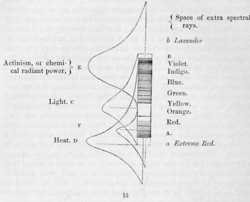

General Remarks On The Solar Agency Producing Chemical Change. Continued
Description
This section is from the book "A Manual Of Photography", by Robert Hunt. Also available from Amazon: A Manual of Photography.
General Remarks On The Solar Agency Producing Chemical Change. Continued
The chemical influences of the prismatic rays vary as their heating powers, but in the contrary direction.
If we place a piece of photographic paper in such a position that the spectrum falls upon it, it will be found to be very unequally impressed by the various rays. Some very extraordinary peculiarities have been observed by Sir John Herschel and myself; but it will be sufficient for our present purpose to state the general features of the impression under ordinary conditions. For some distance below the visible red ray, the paper will be found uncoloured ; on the part where the red ray falls, a tinting of red or pink will be evident. The orange and yellow rays leave no stain, and the green in general but a faint one. In the place occupied by the blue ray, the first decided darkening is evident, which increases through the indigo and violet rays heading the phenomena. The chemical radiations have a higher refrangibility than the ordinary luminous rays, and consequently they extend in full action to a considerable space beyond the lavender rays, where no light exists which can produce excitement on the optic nerve of the human eye, unless aided by some peculiar conditions of transparent media, or of optical arrangements.
Whenever we throw a prismatic spectrum upon any photographic surface, it is always accompanied by a sufficient quantity of diffused light to produce some chemical change, which shows itself in darkening, over the parts beyond the coloured image. However, there are two points where this change does not take place, and where the paper is preserved positively white; these are the points of maximum light and heat—the yellow and crimson rays. Here we have the evidence of the interference of these agencies with the chemical radiations. As we can separate heat and light from each other by the use of coloured media, so can we isolate the chemical and luminous principles of the sun's rays. By a yellow glass stained with silver we may cut off the agency producing chemical change so completely, that the most sensitive photographic material may be exposed to a full flood of sunshine, without its undergoing any alteration in colour. If, however, we take a dark-blue glass, such as is usually prepared with the oxide of cobalt, of so deep a colour that it obstructs a considerable quantity of light, and place under it the same, or any photographic preparation, it will be found to darken as rapidly as if no glass had been interposed between it and the sun.
Thus we obtain conclusive proof that it is not light, luminous power, which produces the chemical change. That it is not heat is shown in the same manner by the protecting influence exerted by the maximum calorific rays; and therefore we are driven to the hypothesis of the existence of a new agency—a new imponderable element—or a noble form of force which is broadly distinguished from these principles or forces in its effects. To mark this the term Actinism has been proposed, and it is now very generally adopted. The word signifies nothing more than ray power, and therefore, as involving no theory, it is free from many of the objections which would apply to any other term adopted from preconceived ideas.
Photography appears to be a misnomer, since the pictures so called are not drawn by light. It is, however, too firmly rooted in the public mind to admit of the hope that any other may be adopted. If I might venture a suggestion, I would advocate a return to the term introduced by Niepce, whose processes are described in the historical section—Heliography, Sun-drawing, which most clearly expresses the fact, leaving the question, of the particular agent effecting the chemical change still open for examination.
The annexed figure (15) shows the conditions as they are at present known.
From A to B exhibits the Newtonian spectrum, a and b being the rays which belonged to modern discovery previously to the recent observation that the peculiar blue rays seen in solution of quinine and some mineral oils belong to a yet higher order of refrangibility. The curves c, D, and E, represent the relative maxima of heat, light, and actinism, F being a second apparent maximum—indicated in the red ray—of the chemical powers. This may, however, be proved eventually to be a function of heat, since we know that calorific power will produce chemical change even when it is exercised as a radiant force.
The operation of these antagonistic forces is somewhat remarkably shown over different regions of the earth. Advancing from our own lands towards the tropics, it is found that the difficulties of obtaining pictures by the solar influences increase; and, under the action of the glowing light of equatorial climes, a much longer period is required for impressing a photograph than is occupied in the process either in London or Paris. It has been stated by Dr. Draper, that in his progress from New York to the Southern States he found the space protected from chemical change by the yellow rays regularly increasing..
The same result is apparent in the differences between the spring and summer. Usually in March and April photographs are more readily obtained than in June and July.
It is worthy of notice, that the morning sun, between the hours of eight and twelve, produces much better effects than can be obtained after the hour of noon: this was observed at a very early period by Daguerre. For drawings by application, this is but slightly, if at all, felt, but with the camera it is of some consequence to attend to this fact. We are not yet in a position to record more than the fact,—the cause of the difference is not determined; probably it may be found to exist in a greater absorptive action of the atmosphere, caused by the evaporation of aqueous vapour from the earth. In the neighbourhood of large towns it might be accounted for by the circumstance of the air becoming, during the day, more and more impregnated with coal smoke, etc., which offers very powerful interruption to the free passage of the chemical rays. This will, however, scarcely account for the same interference being found to exist in the open country, some miles from any town. Until our meteorological observers adopt a system of registering the variations of light and actinic power by means of some well-devised instrument, we cannot expect to arrive at any very definite results. The subject involves some matters of the first importance in photometry and meteorology, and it is to be desired that our public observatories should be furnished with the required instruments for carrying out a series of observations on the diurnal and monthly changes in the relative conditions of the solar radiations. We have now evidence which proves that changes, almost inappreciable, in the condition of the atmospheric media, through which the solar rays traverse, are capable of producing a most remarkable influence upon the colours of the spectrum and their chemical power.
Many of the phenomena of vegetable life will be found to be directly dependent upon the operation of these principles; and it would be important to mark any abnormal states of growth— such as not unfrequently occur—and to be enabled to refer them to peculiar solar conditions.*
* See Researches on Light, 2nd Edition, by the Author.
Continue to:
- prev: Chapter I. General Remarks On The Solar Agency Producing Chemical Change
- Table of Contents
- next: Chapter II. Chemical Changes On Sensitive Preparations. Section I. Nitrate Of Silver